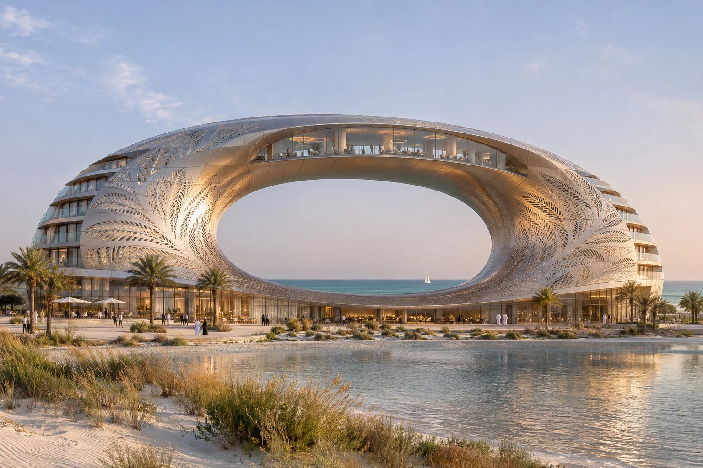

Twin Prow Duplex
Two terrace planes point in opposite directions on a planted Atlantic slope. A stone blade separates the garden flat from the upper home’s entry.
- Setting
- Cascais, Portugal
- Typology
- Garden flat and upper maisonette
- Work
- Exterior & interior visualisation
Perspective & drawing studies - Status
- Unbuilt concept
- Collection
- 2026 · Study 11
Two white terrace planes point in opposite directions on the Atlantic slope. The lower home reaches its garden on one level. A stone blade conceals the separate stair to the upper maisonette, keeping the two arrivals private.
The street splits into two entrances. One reaches the garden flat directly. The second climbs behind a stone blade to the upper two-level dwelling.
An external stair climbs beside the stone wall to the upper maisonette. Evening light distinguishes the sheltered entrances and projecting terrace edges.
Oxide-red plaster and sea-green ceramic give the upper living room a warm interior horizon. Rope-webbed chairs sit beside the wide opening to the sea.
The garden flat opens directly to its lawn and shaded terrace. Stone, timber and red plaster continue the material language across the lower level.
At the scale
of touch.
Oxide-red lime plaster, smoked chestnut, sea-green glazed ceramic at wash points and rope-webbed dining chairs. Recessed tracks let curtains stack inside the taper rather than obstruct the glass. A rope-webbed dining chair keeps air moving through the seat. Curtain stacks disappear behind smoked chestnut reveals so the wedge-shaped opening stays clear when the glass opens.
Behind the image.
Perspective / General arrangementA charcoal and graphite perspective study of Twin Prow Duplex. The cutaway traces the relationship between the outer form, occupied rooms and circulation.
The concept drawing sheet for Twin Prow Duplex, bringing floor layouts, site approach, section, elevation and an envelope detail together. Open the vector PDF to read the full drawing at print resolution.
Concept design studies for visual presentation. These drawings describe the proposed spatial arrangement and are not construction documents.
Lagoon Arc Hotel
Explore the project